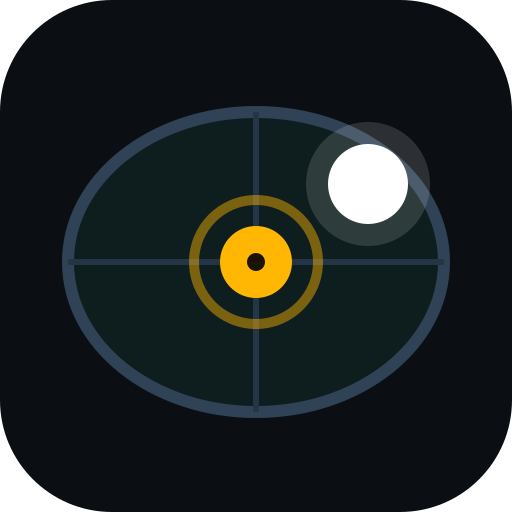

Bedside Field
Saccadic & touch perimetry for patients who can’t follow verbal instructions
How will the patient respond?
The camera isn’t available in this view (it needs HTTPS and camera permission), so Start will switch to examiner scoring. The simulated-patient demo still works.
Eye(s) tested
Screen & distance
1 · Match a bank card to the screen
Hold any bank or ID card flat against the glass, then drag the slider until the outline is exactly as wide as the card (85.6 mm).
card
…or enter the screen diagonal
2 · Viewing distance
30 cm
Measure from the bridge of the nose to the screen. 25–35 cm works well; the app uses this to convert pixels into degrees.
Position the tablet
- Landscape, ~30 cm from the face — use a stand, or hold it steady.
- Centre the tablet on the patient’s nose.
- Face the room light, not a window or lamp behind the patient. Remove reflective glasses if you can.
- The camera should see both eyes clearly; keep your hand and head out of its view.
Past tests
Stored only in this browser on this device.